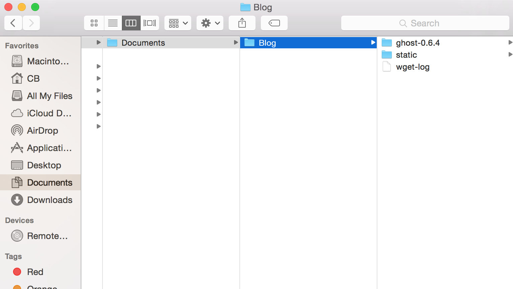
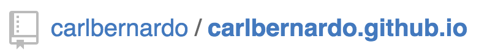

Setting up your Ghost + GitHub Pages blog
If there's anything people who are just starting a blog have trouble with (including myself), it's exactly that — starting it.
How should I start my blog off?
Should I do a series of posts?
What do I honestly have to offer to any readers?
I'm sure you're familiar with the above. And as much as I would love to help with the crafting of your first posts, I'll have to leave that up to you. What I can do however, is help you get up and running on GitHub Pages using the Ghost blogging platform (This is also my cop out first post; shhh....).
Based on my experience and other posts, here are the prereqs:
- Knowledge of Git (we'll be committing and pushing our blog via the terminal, so be comfortable with this workflow)
- Some basic knowledge of GitHub (if you don't have an account, stop here and please sign up for an account HERE)
- Xcode. You'll run into errors when trying to install Ghost if you don't have this. Trust me.
- Pip, a tool for installing Python Packages. To check whether you already have it installed, just type 'pip' in your terminal. If you have it installed, you'll see a bunch of options populate your terminal. If you need to install it, please go HERE
- Homebrew Package Manager, a package manager for OS X. To check whether you already have it installed, just type 'brew' in your terminal. If you have it installed, you'll see a bunch of options populate your terminal. If you need to install it, please go HERE
- Node.js. The folks at Ghost recommend v0.10.4. If you need to revert to an older version, try using n, Node.js version manager. You can find more information about it HERE
- npm, a package manager for Node.js. The folks at Ghost recommend v1.4.21. To check whether you already have it installed, just type 'npm' in your terminal.
- And a very high tolerance for troubleshooting. I've assisted a ton of my friends trying to get their blogs up using Ghost and GitHub pages and it still takes me a while since everyone has different development environments.
Anyways, Let's get to it.
1. Download Ghost
You can download Ghost by navigating HERE.
When you finish downloading the zip file, extract it. We'll be dropping this ghost directory within another folder for reasons I'll explain later. For now, you can follow my example below (ignore the static directory and wget-log).

You'll then want to navigate to the ghost directory in your terminal. In my example above, my directory is labeled 'ghost-0.6.4'.
From here on out, we'll be using our terminal. In all my examples, you'll see a $ sign; you will be typing everything in yourself after that sign. The output / result will be dictated with a > sign.
Ensure you have the recommended version of Node.js.
$ node -v
> v0.10.4
When you're in the Ghost directory (mine is 'ghost-0.6.4'), type:
$ npm install --production
When Ghost has finished installing, type this to start the local server:
$ npm start
Once Ghost starts locally, you'll notice you won't have access to your terminal as all the processes are being shown in real time. You can easily open another tab within your terminal before starting Ghost so you have one tab handling the requests, while the other is free to do other tasks.
While Ghost is running locally, you'll want to navigate to http://localhost:2368/ghost for the initial setup. You can use your current Ghost account or create a new one. At this point, you'll have access to Ghost's dashboard, which includes the basic Casper theme. Feel free to use this or a custom theme (just drop the theme in the content/themes directory and then select the new theme under settings).
Once everything's up to par and you've added some articles, it's almost time to push everything to GitHub pages, but before that, let's talk about Buster.
2. Download Buster
You can find Buster documentation HERE. Buster is a "Brute force static site generator for Ghost"... hence the name.
Anyways, if you have everything in the prereqs, this should be super quick to do. Type the following in your terminal:
// install buster
$ pip install buster
// required by buster
$ brew install wget
And that's it! Let's set up the repo.
3. Create your repo
Navigate to your GitHub account and create a public repo named youraccountname.github.io
Here is an example using this website:

WARNING: I cannot stress this enough. You MUST name your website after your GitHub username or your website will not work i.e. my GitHub username is "carlbernardo", so my website must be "carlbernardo.github.io".
Once you've created your repo, you'll need to navigate to your 'config.js' file located in your ghost directory (again, mine is 'ghost-0.6.4'). In this file, you'll need to change the URL in the Production area to the URL you just set up: youraccountname.github.io
// ### Production
// When running Ghost in the wild, use the production environment
// Configure your URL and mail settings here
production: {
url: 'http://youraccountname.github.io/',
// ^^ THIS IS WHAT YOU CHANGE ^^
Anyways, do you remember earlier how I nested the 'ghost-0.6.4' directory within a 'Blog' folder? Well here's why: I want to keep the static files generated by buster separate from my Ghost files. Navigate to this folder now via your terminal. In my example, I'm navigating to 'Blog' (the parent directory to my Ghost directory) using the file structure laid out at the top.
From this directory, run:
$ buster setup
And when prompted for a repo address, enter the HTTPS clone url (e.g. https://github.com/carlbernardo/carlbernardo.github.io.git). You can find this link on your repo page on the right-hand side.
Once you've finished the setup, you'll need to run the following to create files that will populate your static directory:
$ buster generate --domain=http://localhost:2368
4. Commit & push
Navigate to the 'static' directory:
$ cd static
// Remember I was in the parent folder 'Blog'
// so I'm going one directory deep
It's time to stage the files and make your initial commit.
// Add all files in 'static' directory and stage
$ git add .
$ git commit -m "Initial commit SWAG SWAG SWAG"
//Upload to your repo
$ git push
And that's it. It may take a few minutes for your repo to be live at your domain, youraccountname.github.io.
Keep refreshing, but until then you go Glen Coco!
5. Making changes
So there are a few posts out there that show you how to set up your blog, but I never really found an answer on what to do when you make a change or write a new post and want to push all these changes to your live website. So I thought I would write a bit about what I do. Note: I'm not sure whether this is exactly the correct process or not, but it's been working for me. I'd love to know how you do it — just comment on this post below.
I'll try and keep this short and sweet:
- Make your changes via the Ghost dashboard (e.g. http://localhost:2368/ghost) or direct code changes.
- Go to the 'Blog' folder and regenerate the files in the static folder by:
$ buster generate --domain=http://localhost:2368
- Navigate to the 'static' directory:
$ cd static
- Add, commit, push
$ git add .
$ git commit -m "Second commit. Change social media icons"
$ git push
And that's it. This time I'm serious.